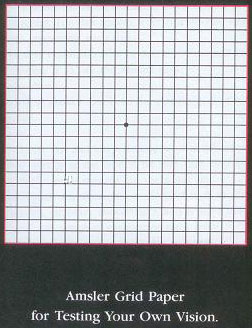

Home > Eye Disorders > Macular Degeneration
Eye Disorders
Macular Degeneration- About Macular Degeneration
- Causes and symptoms
- How is it Diagnosed
- How is it Treated
- Medication and Care to be Taken
- Image Gallery
What is macular degeneration?
Due to the aging of he eye retino also ages leading to macular degeneration. Macular degeneration is a deterioration or breakdown of the macula. The macula is a small area in the retina at the back of the eye that allows you to see fine details clearly and perform activities such as reading and driving. When the macula does not function correctly, your central vision can be affected by blurriness, dark areas or distortion. Macular degeneration affects your ability to see near and far, and can make some activities – like threading a needle or reading—difficult or impossible.
Although macular degeneration reduces vision in the central part of the retina, it usually does not affect the eye’s side, or peripheral, vision. you could see the outline of a face but not be able to see his nose or eyes.
Macular degeneration alone does not result in total blindness. Even in more advanced cases, people continue to have some useful vision and are often able to take care of themselves. Hence these patients need to be reassured constantly as this is a bilateral condition.

Many older people develop macular degeneration as part of the body’s natural aging process. There are different kinds of macula problems, but the most common is age-related macular degeneration (AMD). Exactly why it develops is not known, and no treatment has been uniformly effective. Macular degeneration is the leading cause of severe vision loss over 65. India is seing an exlosion of these case as our aging population in increasing and cataract blindness is being eradicated.
The two most common types of AMD are “dry” (atrophic) and “wet” (exudative):
“DRY” MACULAR DEGENERATION (ATROPHIC)
Most people have the “dry” form of AMD. It is caused by aging and thinning of the tissues of the macula. Vision loss is usually gradual.
“WET” MACULAR DEGENERATION (EXUDATIVE)
The “wet” form of macular degeneration accounts for about 10% of all AMD cases. It results when abnormal blood vessels form underneath the retina at the back of the eye. These new blood vessels leak fluid or blood and blur central vision. Vision loss may be rapid and severe.
Deposits under the retina called drusen are a common feature of dry macular degeneration. Drusen alone usually do not cause vision loss, but when they increase in size or number, this generally indicates an increased risk of developing advanced AMD.
What are the symptoms of macular degeneration
Macular degeneration can cause different symptoms in different people. The condition may be hardly noticeable in its early stages. Sometimes only one eye loses vision while the other eye continues to see well for many years. But when both eyes are affected, the loss of central vision may be noticed more quickly.
Following are some common ways vision loss is detected:
- words on a page look blurred:
- a dark or empty area appears in the center of vision;
- straight lines look distorted, - Metamorphopsia
Amsler grid with wavy lines
How is macular degeneration diagnosed?
Many people do not realize that they have a macular problem until blurred vision becomes obvious. Your ophthalmologist can detect early stages of AMD during a medical eye examination that includes the following:
- a simple vision test in which you look at a chart that resembles graph paper (Amsler grid);
- viewing the macula with an ophthalmoscope;
- Taking special photographs of the eye called fluorescein angiography to find abnormal blood vessels under the retina.
How is macular degeneration treated?
NUTRILTIONAL SUPPLEMENTS
If the retina is torn and retinal detachment has not yet occurred, a retinal detachment may be prevented by prompt treatment. Once the retina becomes detached, it must be repaired surgically by an ophthalmologist. Successful reattachment of the retina consists of sealing the retinal tear and preventing the retina from pulling away from the back of the eye again. There are several surgical procedures that may be used.
Although the exact causes of macular degeneration are not fully understood, antioxidant vitamins and zinc may reduce the impact of AMD in some people.
A large scientific study found that people at risk for developing advances stages of AMD lowered their risk by about 25% when treated with a high-dose combination of vitamin C, vitamin E, beta carotene and zinc. – AREDS study
It is very important to remember that vitamin supplements are not a cure for AMD, However, specific amounts of these supplements do play a key role in helping some people at high risk for advances AMD to maintain their vision.
LASER SUGERY, PDT AND ANTI-VEGF TREATMENTS
Certain types of “wet” macular degeneration can be treated with laser surgery, a brief outpatient procedure that uses a focused beam of light to slow or stop leaking blood vessels that damage the macula. A treatment called photodynamic therapy (PDT) uses a combination of a special drug and laser treatment to slow or stop leaking blood vessels – cold laser treatment with visudyne .
Another form of treatment targets a specific chemical in your body that is critical in causing abnormal blood vessels to grow under the retina. That chemical is called vascular endothelial growth factor (VEGF). Anti-VEGF, reducing the growth of abnormal blood vessels and slowing their leakage. These drugs are injucted into the votrious cavity and have to be repeated 4 to 6 weekly in some cases. Lucentis, Avastin, macugen.
These procedures may preserve more sight overall, though they are not cures that restore vision to normal. Despite advanced medical treatment, many people with macular degeneration still experience some vision loss. AMD is like a train coming down a hill which we are trying to stop with our various treatment its progression to inexorable blindness.
Low Vision Aids
To help you adapt to lower vision levels, your ophthalmologist can prescribe optical devices or refer you to a low-vision specialist or center. Because side vision is usually not affected, a person’s remaining sight is very useful. Often, people can continue with many of their favorite activities by using low-vision optical devices such as magnifying devices, closed-circuit television, large-print reading materials and talking or computerized devices.
Medication and Care to be Taken
Testing your vision with the Amsler grid
You can check your vision daily by using an Amsler grid like the one pictured here. You may find changes in your vision that you wouldn’t notice otherwise. Putting the grid on the front of your refrigerator is a good way to remember to look at it each day.
Amsler grid
To use the grid:
- Wear your reading glasses and hold this grid 12-15 inches away from your face in good light.
- Cover one eye.
- Look directly at the center dot with the uncovered eye.
- While looking directly at the center dot, not whether all lines of the grid are straight or if any areas are distorted, blurred, blurred or dark.
- Repeat this procedure with the other eye.
- If any area of the grid looks wavy, blurred or dark, contact your ophthalmologist immediately.

For full detail on Macular degeneration please click here